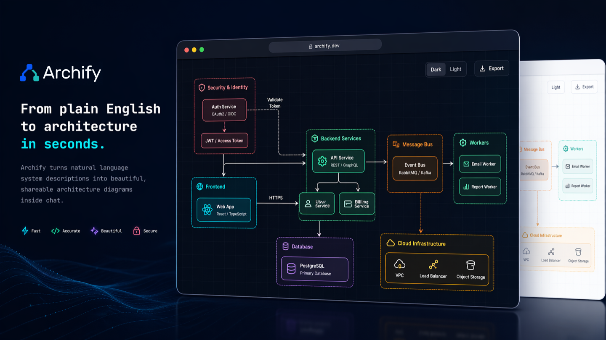

Archify
Point an AI agent at your codebase and get a validated architecture diagram - not a guess, a verified map.
Install Archify in Claude Code and ask it to diagram any project: it reads the code, draws the architecture, then runs a validation engine that rejects crossing connections and overlapping labels until the diagram is clean.

How does it work?
You need an architecture diagram of your project, but drawing one by hand takes hours and it's out of date the moment the code changes.
A new team member asks 'how does this system fit together?' and nobody has a current diagram.
You install Archify in Claude Code and ask it to diagram a project.
npx skills add tt-a1i/archify -g to install, then ask Claude Code: 'Diagram the architecture of this project.'
A codebase - any project the agent can read.
A Node.js API, a Python service, a monorepo with multiple packages. Archify reads the code to understand the structure.
It reads the code, identifies the components and connections, draws a diagram, then validates it automatically.
- The agent reads your codebase and identifies the main components: services, databases, APIs, queues, frontends
- It draws a layered architecture diagram showing how those components connect
- A validation engine checks the diagram: no crossing connections, no overlapping labels, no unreadable text. If something fails, it redraws until the diagram passes
ThakiCloud used it to diagram a 9-component AI platform stack. The first render was rejected by the validator for crossing connections - it corrected and produced a clean diagram.
A clean, validated architecture diagram you can share, print or embed.
- A verified architecture diagramAn SVG or PNG diagram with labeled components, clean connections, and no visual clutter
- A diagram that updates when the code changesRun it again after a refactor and the diagram reflects the new architecture
- A gallery of examples20+ example diagrams at archify's gallery page, showing different project types and layouts
What changes for me?
Without it
- Architecture diagrams are drawn by hand in tools like Lucidchart or Miro, then forgotten when the code changes.
- AI-generated diagrams are often inaccurate - wrong connections, overlapping labels, or a layout that's hard to read.
With it
- Ask an agent to diagram the project and get a validated result - the engine rejects bad layouts before you see them.
- Run it again after any change: the diagram stays current with the code.
How hard is it to try?
Effort
- Install it:
npx skills add tt-a1i/archify -g(works in Claude Code; other agents have their own install commands). - Open a project and ask Claude Code: 'Diagram the architecture of this project.' Watch it read the code and generate a diagram.
- Check the gallery to see what different project diagrams look like.
What it takes on your computer
- Space on disk
- No data found for exact size. It's a skills plugin - lightweight by nature.
- Memory while it runs
- Standard Node.js usage. No GPU needed, no Docker needed.
- Runs on
- Anywhere Node.js 18+ runs: Mac, Windows, Linux. Requires an AI agent (Claude Code, Codex, or similar) to drive it.
Paste this into Claude Code. It runs your safety scan first, then a 10-minute test.
/skillspector https://github.com/tt-a1i/archify If that scan passes: install the skill, point it at a real project (this repo or another you have open), and ask for an architecture diagram. Check whether the validator catches any layout problems. Report the result. 10 minutes max.
Should I?
Great if you...
- You need architecture diagrams that stay current with the code, without spending hours in a drawing tool
- You want a diagram you can trust - the validation engine catches layout problems before you share it
Skip it if...
- You need pixel-perfect custom diagrams for a presentation - Archify produces clean automated layouts, not designer-polished visuals
- You don't use an AI coding agent - Archify needs Claude Code, Codex or a similar host to run
Instead, you could look at
- StructurizrThe original 'architecture as code' tool. More mature and supports the C4 model formally, but its cloud service has been retired - only the on-premises version remains.
- Mermaid (in your editor)A text-to-diagram tool built into GitHub, Notion and many editors. Simpler, no validation engine, but works without an AI agent.
Is it safe?
- Security advisories: 0GitHub's advisory list, checked Oct 2
- Searches for CVEs, vulnerabilities, malware and scams20 results read, including the national CVE database: nothing found
- Are the stars earned?76.1K stars, 72 contributors, 867 commits
Watch out for
- Three of five packaged examples fail Archify's own validation gate. A reviewer found this (issue #324). The validator works, but the bundled examples haven't all been updated to pass it.
- Diagrams require human verification. Aditi Gupta's review notes that Archify's output needs a human eye - the structure is a starting point, not gospel.
- Requires an AI agent host. Archify isn't a standalone app. It needs Claude Code, Codex or a similar agent to drive it, which means you need one of those set up first.
- DeepSeek Harness requires Node 22+. The main skill works with Node 18, but the DeepSeek integration needs Node 22.19.0 or later.
Who's using it, and for what?
Archify has 76K stars and 128K installs on skills.sh. Two named public uses found.
ThakiCloud team
Diagrammed their AI platform stack (9 components: GPU scheduling with Kueue, model serving with vLLM, multi-tenant auth via Keycloak). First render was rejected by the validator; corrected version passed.
Aditi Gupta, AI engineer (Bengaluru)
Tested Archify on unfamiliar repositories and changed her workflow: now starts with a structured map before reading code. Found regeneration cheaper than manual redrawing.
Who's talking about it
- BetterStackArchify: Verifiable Architecture Diagrams Generated by AI Agents
- Substack (Artificially Intimidating)Archify: The Free Architecture Diagram Alternative to Structurizr's Retired Cloud
- Taku blogArchify: Architecture Diagrams Your Agent Can Verify